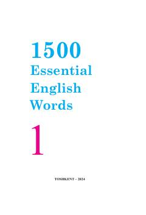

1EIngliz tilidagi eng zarur so'zlarni o'z ichiga olgan o'quv qo'llanma.
Ushbu kitob ingliz tilini o'rganuvchilar uchun mo'ljallangan to'rt qismli lug'at to'plamining birinchi qismidir. Unda kundalik hayotda eng ko'p ishlatiladigan so'zlar jamlangan bo'lib, o'quvchilarning o'qish, yozish va tinglab tushunish ko'nikmalarini rivojlantirishga xizmat qiladi.